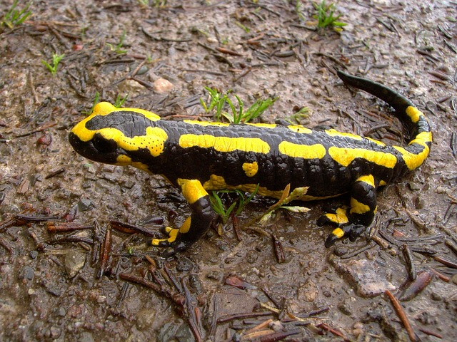

Salamanders are a group of amphibians with a lizard-like appearance, including short legs and a tail in both larval and adult forms.
 more infoSeveral species of salamander inhabit the temperate rainforest of the Pacific Northwest, including the Ensatina, the Northwestern Salamander and the Rough-skinned Newt. Most salamanders are nocturnal, and hunt for insects, worms and other small creatures.